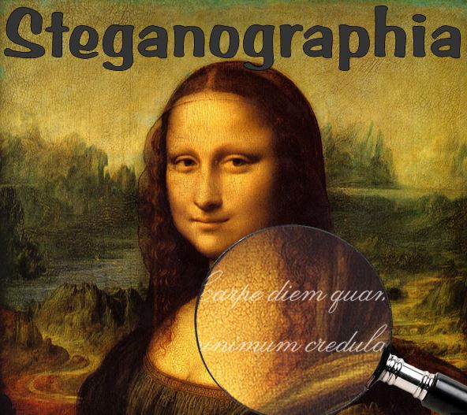
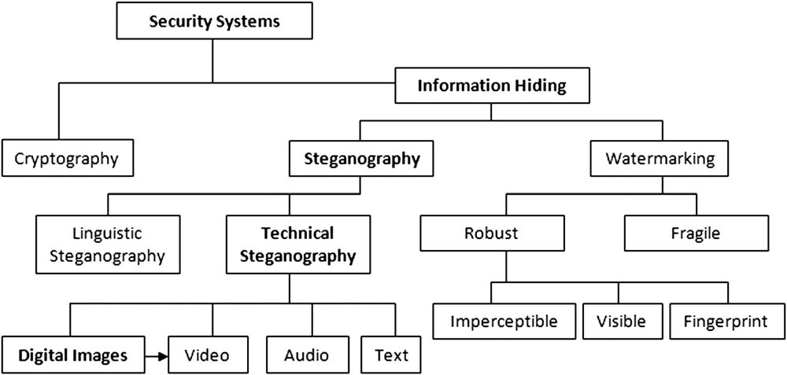
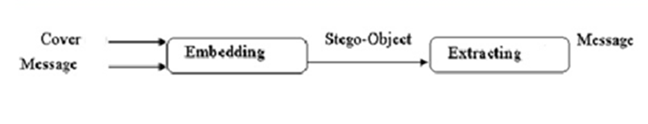

بـسـم الــله الـرحـمـن الـرحـيـم

اليوم معانا أول درس من سلسلة دروس علم إخفاء البيانات Steganography
1# مقدمة عن علم إخفاء البيانات Steganography
إعداد وتجهيز : KaSPeR HaCKeR
قبل ما نبدأ حاب اعرفكم على أنواع وطرق إخفاء البيانات
في الصورة التالية توضيح عدة أنواع وطرق لإخفاء البيانات والتي من بينها التشفير (Encryption أو Cryptography) و إخفاء البيانات (Steganography) ، وكما هو موضّح، هنالك أقسام فرعية تحت كل نوع.

اولاً : ما هو علم إخفاء البيانات Steganography؟
هو فن وعلم كتابة رسائل مخفية بطريقة لا يمكن لأحد، عدا المرسل والمستلم المعني،
الشك بوجود الرسالة، وهو نوع من السرية من خلال الغموض.
# أول تسجيل لاستخدام هذا المصطلح كان سنة 1499 من قبل يوهانس تريثيموس.
المفهوم التقليدي للرسالة المخفية هو أن تكون مكتوبة بحبر خفي بين السطور المرئية لرسالة خاصة.
توجد عدة تقنيات لهذا العلم وأهمها هو :
إخفاء المعلومات الرقمية الحديثة، حيث يتم تشفير البيانات أولًا بالوسائل المعتادة
ومن ثم إدراجها، وذلك باستخدام خوارزمية خاصة، وتعد البيانات التي هي جزء من
تنسيق ملف معين مثل صورة (JPEG).
أى البتات التي تمثل نفس لون بكسل المتكررة على التوالي.
ثانياً : الفرق بين التشفير وإخفاء المعلومات :
عند تشفير (Encryption أو Cryptography) معلومة ما، يستطيع الطرف الثالث معرفة
أن هناك اتصال يتم مابين طرفين (شخصين أو جهتين) لكنه لا يستطيع فهم المعلومات
لأنها مشفرة. أما في حالة إخفاء المعلومات (Stegano graphy)، لا يعلم الطرف الثالث
بأن هناك شيء مخفي في الخفاء أو أن هناك اتصال بين اثنين.
ثالثاً : الوسائط التي تستخدم في إخفاء المعلومات:
1- ملفات نصية.
2- صورة ملفات.
3- ملفات الفيديو.
4- ملفات الصوت.
5- رسائل البريد الإلكتروني.
رابعاً : تقنيات علم إخفاء البيانات :
1- التشفير المحض «Pure Steganography» :
يتم تضمين المعلومات أو الرسالة الخفية داخل الوسيط بشكل مباشر وبدون كلمة.

2- التشفير بالمفتاح السري «Secret Key Steganography»
يعني إخفاء المعلومات باستخدام مفتاح أو كلمة سرية تضاف للرسالة المخفية
عند إخفائها داخل الوسيط المستهدف. وهكذا لا يمكن استرجاع أو قراءة الرسالة
المخفية من قبل الطرف الثاني إلا بمعرفة الكلمة السرية، وبإضافة الكلمة السرية
لعملية الإخفاء تكون العملية آمنة ومعقدة أكثر.

3- إخفاء المعلومات بإستخدام مفتاح عام- «Public Key Stegano graphy»
هي مثل التشفير عن طريق استخدام مفتاحين، الأول مفتاح «عام» ويستخدمه الشخص
الأول عند عملية إخفاء المعلومة، أما المفتاح الثاني «الخاص» من قبل الشخص المستقبل
عند استرجاعه للمعلومة المخفية، مع العلم أن المفتاح الخاص له علاقة مباشرة مع المفتاح العام.

المصادر :
1- Wikipedia
2- egyres
3- educad.me